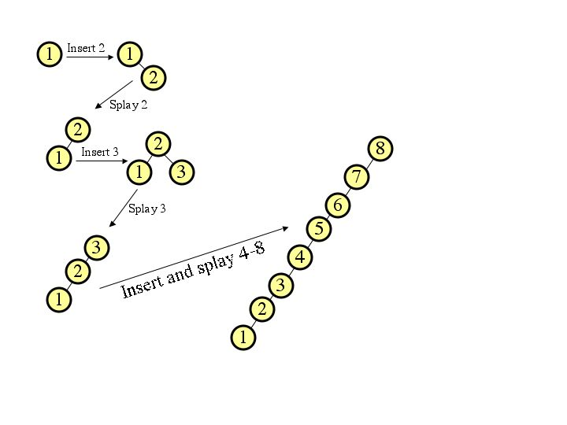
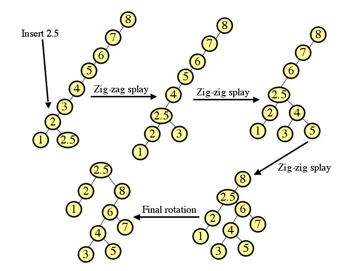
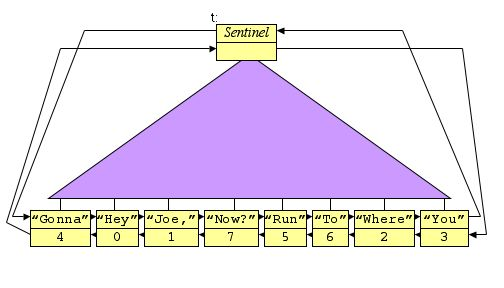

|  |
|  |
If we split the left sides of each node into three, and the right sides into two, then the resulting tree is:
These are the only two correct answers. An optimization of B-trees would "borrow" a slot from a neighboring node, such as:
However, this answer did not receive full credit, since it is not part of the standard definition of B-Trees.
int is_bstree(BTreeNode *root, double *min, double *max)
{
double subtree_min, subtree_max;
if (root->left == NULL) {
*min = root->key.d;
} else {
if (!is_bstree(root->left, &subtree_min, &subtree_max)) return 0;
if (subtree_max >= root->key.d) return 0;
*min = subtree_min;
}
if (root->right == NULL) {
*max = root->key.d;
} else {
if (!is_bstree(root->right, &subtree_min, &subtree_max)) return 0;
if (subtree_min <= root->key.d) return 0;
*max = subtree_max;
}
return 1;
}
|
|  |
So, it will print out:
You can cut/paste the program and try it yourself if you want.